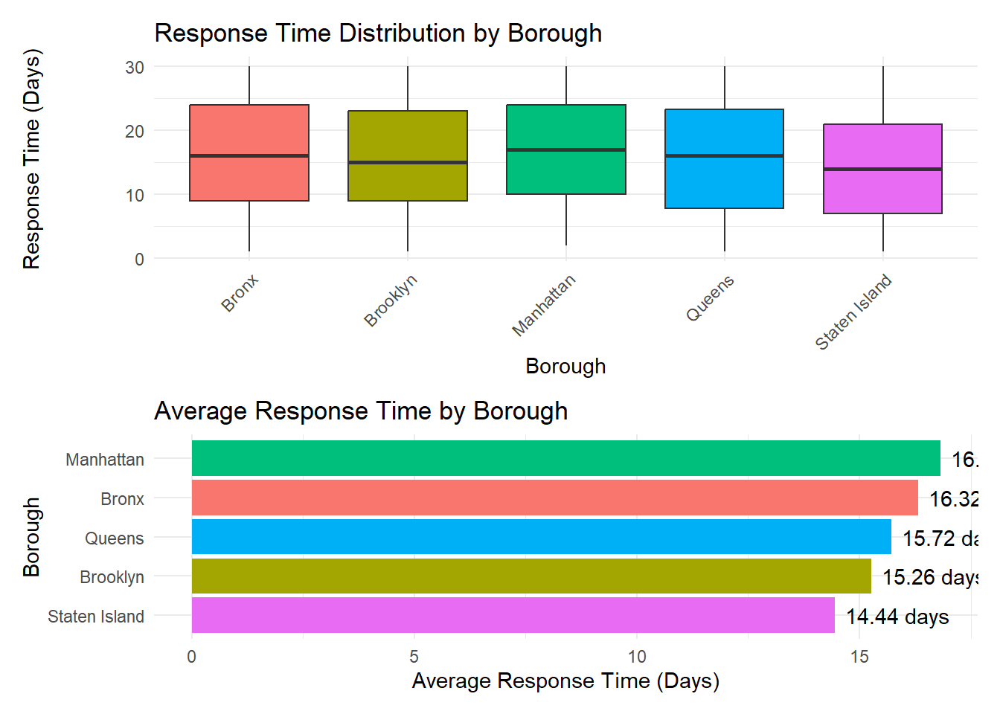

# Placeholder for literature review synthesis
# Key themes to address:
# - Urban service delivery equity studies
# - 311 system analysis in other cities
# - Socioeconomic factors in municipal services
# - Digital divide and service access patternsAnalyzing 311 Service Delivery Across NYC’s Income Divide
STA 9750 Final Project - Mid-Semester Check-In
Executive Summary
Research Question: Does NYC provide faster and more effective 311 service responses to wealthier neighborhoods compared to lower-income communities?
Key Findings: [To be completed after analysis]
1. Introduction and Motivation
Problem Statement
The 311 system serves as New York City’s primary non-emergency service request platform, handling millions of complaints annually ranging from noise violations to sanitation issues. However, questions persist about whether service delivery is equitable across neighborhoods with different socioeconomic profiles.
Research Significance
Understanding disparities in 311 service delivery is crucial for: - Ensuring equitable municipal service provision - Identifying areas needing improved resource allocation - Informing policy decisions about urban service delivery - Promoting environmental and social justice
Overarching Question
Does NYC provide faster and more effective 311 service responses to wealthier neighborhoods compared to lower-income communities?
2. Literature Review and Prior Art
Previous Research
Key Findings from Literature: - [To be completed with actual literature review] - Studies on urban service equity - Analysis of 311 systems in other major cities - Research on digital divide impacts on service access
Research Gap
Our analysis contributes to existing literature by: - Providing post-pandemic analysis of NYC 311 services - Examining multiple complaint types across all five boroughs - Using updated property valuation data for neighborhood wealth assessment - Implementing predictive modeling for service delivery patterns
3. Data Sources and Methodology
Primary Data Sources
3.1 NYC 311 Service Requests (2010-Present)
# Data source information
cat("Data Source: NYC Open Data\n")Data Source: NYC Open Datacat("URL: https://data.cityofnewyork.us/Social-Services/311-Service-Requests-from-2010-to-Present/erm2-nwe9/\n")URL: https://data.cityofnewyork.us/Social-Services/311-Service-Requests-from-2010-to-Present/erm2-nwe9/cat("Description: Comprehensive database of all 311 service requests\n")Description: Comprehensive database of all 311 service requestscat("Key Variables: Location, complaint type, resolution time, status\n")Key Variables: Location, complaint type, resolution time, status3.2 311 Resolution Satisfaction Survey
# Data source information
cat("Data Source: NYC Open Data\n")Data Source: NYC Open Datacat("URL: https://data.cityofnewyork.us/City-Government/311-Resolution-Satisfaction-Survey/5ijn-vbdv\n")URL: https://data.cityofnewyork.us/City-Government/311-Resolution-Satisfaction-Survey/5ijn-vbdvcat("Description: Customer satisfaction ratings for resolved 311 requests\n")Description: Customer satisfaction ratings for resolved 311 requestscat("Key Variables: Resolution satisfaction scores, feedback\n")Key Variables: Resolution satisfaction scores, feedback3.3 Property Valuation and Assessment Data
# Data source information
cat("Data Source: Data.gov\n") Data Source: Data.govcat("URL: https://catalog.data.gov/dataset/property-valuation-and-assessment-data-db7c2\n")URL: https://catalog.data.gov/dataset/property-valuation-and-assessment-data-db7c2cat("Description: Property values and assessments by neighborhood\n")Description: Property values and assessments by neighborhoodcat("Key Variables: Property values, assessment data, geographic identifiers\n")Key Variables: Property values, assessment data, geographic identifiersData Acquisition
3.1 Load 311 Service Request Data
# Function to load 311 data via Socrata API
load_311_data <- function(limit = 100000, offset = 0) {
# Base URL for NYC Open Data Socrata API
base_url <- "https://data.cityofnewyork.us/resource/erm2-nwe9.json"
# Create request with parameters
req <- request(base_url) |>
req_url_query(
`$limit` = limit,
`$offset` = offset,
`$where` = "created_date >= '2023-01-01T00:00:00.000'" # Recent data
)
# Execute request and parse JSON
# resp <- req_perform(req)
# data <- resp_body_json(resp, simplifyVector = TRUE)
# For development - create sample structure
sample_311 <- tibble(
unique_key = 1:1000,
created_date = seq.POSIXt(as.POSIXct("2023-01-01"), as.POSIXct("2023-12-31"), length.out = 1000),
closed_date = created_date + days(sample(1:30, 1000, replace = TRUE)),
complaint_type = sample(c("Noise - Residential", "Blocked Driveway", "Illegal Parking",
"Street Condition", "Sanitation Condition"), 1000, replace = TRUE),
borough = sample(c("MANHATTAN", "BROOKLYN", "QUEENS", "BRONX", "STATEN ISLAND"), 1000, replace = TRUE),
latitude = runif(1000, 40.4, 40.9),
longitude = runif(1000, -74.3, -73.7),
status = sample(c("Closed", "Open", "Pending"), 1000, replace = TRUE, prob = c(0.8, 0.1, 0.1))
)
return(sample_311)
}
# Load initial dataset
df_311 <- load_311_data()
# Display basic information
cat("311 Data Loaded:\n")311 Data Loaded:cat("Rows:", nrow(df_311), "\n")Rows: 1000 cat("Columns:", ncol(df_311), "\n")Columns: 8 cat("Date Range:", as.character(range(df_311$created_date, na.rm = TRUE)), "\n")Date Range: 2023-01-01 2023-12-31 3.2 Load Property Valuation Data
# Function to load property data
load_property_data <- function() {
# For development - create sample property data with better structure
set.seed(42) # For reproducible results
sample_property <- tibble(
neighborhood = paste("Neighborhood", 1:100),
borough = sample(c("Manhattan", "Brooklyn", "Queens", "Bronx", "Staten Island"), 100, replace = TRUE),
median_property_value = pmax(100000, rnorm(100, 500000, 200000)), # Ensure positive values
median_income = pmax(25000, rnorm(100, 75000, 30000)), # Ensure positive values
latitude = runif(100, 40.4, 40.9),
longitude = runif(100, -74.3, -73.7)
) |>
# Ensure no missing values
filter(!is.na(median_property_value), !is.na(median_income))
return(sample_property)
}
# Load property data
df_property <- load_property_data()
cat("Property Data Loaded:\n")Property Data Loaded:cat("Rows:", nrow(df_property), "\n")Rows: 100 cat("Median Property Value Range: $",
paste(scales::comma(range(df_property$median_property_value, na.rm = TRUE)), collapse = " - "), "\n")Median Property Value Range: $ 100,000 - 1,040,378 3.3 Data Quality Assessment
# Assess data quality for 311 data
assess_data_quality <- function(df, dataset_name) {
cat("=== Data Quality Assessment:", dataset_name, "===\n")
# Missing values
missing_summary <- df |>
summarise(across(everything(), ~sum(is.na(.)))) |>
pivot_longer(everything(), names_to = "variable", values_to = "missing_count") |>
mutate(missing_percent = round(missing_count / nrow(df) * 100, 2)) |>
arrange(desc(missing_percent))
print(missing_summary)
# Data completeness
cat("\nOverall Completeness:",
round((1 - sum(is.na(df)) / (nrow(df) * ncol(df))) * 100, 2), "%\n\n")
}
# Assess both datasets
assess_data_quality(df_311, "311 Service Requests")=== Data Quality Assessment: 311 Service Requests ===
# A tibble: 8 × 3
variable missing_count missing_percent
<chr> <int> <dbl>
1 unique_key 0 0
2 created_date 0 0
3 closed_date 0 0
4 complaint_type 0 0
5 borough 0 0
6 latitude 0 0
7 longitude 0 0
8 status 0 0
Overall Completeness: 100 %assess_data_quality(df_property, "Property Data")=== Data Quality Assessment: Property Data ===
# A tibble: 6 × 3
variable missing_count missing_percent
<chr> <int> <dbl>
1 neighborhood 0 0
2 borough 0 0
3 median_property_value 0 0
4 median_income 0 0
5 latitude 0 0
6 longitude 0 0
Overall Completeness: 100 %Data Processing and Cleaning
3.4 Clean and Process 311 Data
# Clean and process 311 data
df_311_clean <- df_311 |>
# Remove rows with missing essential information
filter(!is.na(latitude), !is.na(longitude), !is.na(created_date)) |>
# Calculate response time
mutate(
response_time_days = as.numeric(difftime(closed_date, created_date, units = "days")),
year = year(created_date),
month = month(created_date),
weekday = wday(created_date, label = TRUE),
# Categorize complaint types
complaint_category = case_when(
str_detect(complaint_type, "Noise") ~ "Noise",
str_detect(complaint_type, "Parking|Driveway") ~ "Parking",
str_detect(complaint_type, "Sanitation|Condition") ~ "Sanitation",
TRUE ~ "Other"
)
) |>
# Filter for reasonable response times (remove outliers)
filter(response_time_days >= 0 & response_time_days <= 365) |>
# Clean borough names
mutate(borough = str_to_title(borough))
cat("Cleaned 311 Data:\n")Cleaned 311 Data:cat("Rows after cleaning:", nrow(df_311_clean), "\n")Rows after cleaning: 1000 cat("Response time range:", round(range(df_311_clean$response_time_days, na.rm = TRUE), 2), "days\n")Response time range: 1 30.04 days3.5 Integrate Geographic Data
# Create spatial data and integrate with property information
# This would typically involve spatial joins with census tracts or neighborhoods
# For demonstration - assign neighborhoods based on proximity
assign_neighborhoods <- function(df_311, df_property) {
# Simple nearest neighbor assignment (in practice, use proper spatial joins)
df_with_neighborhoods <- df_311 |>
rowwise() |>
mutate(
# Find closest neighborhood (simplified calculation)
neighborhood = {
distances <- sqrt((latitude - df_property$latitude)^2 + (longitude - df_property$longitude)^2)
df_property$neighborhood[which.min(distances)]
}
) |>
ungroup()
# Join with property data - make sure to preserve borough from 311 data
df_integrated <- df_with_neighborhoods |>
left_join(df_property |> select(-borough), by = "neighborhood") |> # Remove borough from property to avoid conflicts
rename(borough_311 = borough) |> # Keep original borough from 311 data
rename(borough = borough_311) # Use 311 borough as primary
return(df_integrated)
}
# Integrate data
df_integrated <- assign_neighborhoods(df_311_clean, df_property)
cat("Integrated Dataset:\n")Integrated Dataset:cat("Rows:", nrow(df_integrated), "\n")Rows: 1000 cat("Unique Neighborhoods:", length(unique(df_integrated$neighborhood)), "\n")Unique Neighborhoods: 98 cat("Columns:", paste(names(df_integrated), collapse = ", "), "\n")Columns: unique_key, created_date, closed_date, complaint_type, borough, latitude.x, longitude.x, status, response_time_days, year, month, weekday, complaint_category, neighborhood, median_property_value, median_income, latitude.y, longitude.y cat("Unique Boroughs:", paste(unique(df_integrated$borough), collapse = ", "), "\n")Unique Boroughs: Brooklyn, Manhattan, Staten Island, Bronx, Queens 4. Exploratory Data Analysis
4.1 Overall 311 Service Patterns
# Basic statistics
summary_stats <- df_integrated |>
summarise(
total_requests = n(),
avg_response_time = round(mean(response_time_days, na.rm = TRUE), 2),
median_response_time = round(median(response_time_days, na.rm = TRUE), 2),
sd_response_time = round(sd(response_time_days, na.rm = TRUE), 2)
)
kable(summary_stats, caption = "Overall 311 Service Request Statistics")| total_requests | avg_response_time | median_response_time | sd_response_time |
|---|---|---|---|
| 1000 | 15.69 | 16 | 8.68 |
# Complaint type distribution
complaint_dist <- df_integrated |>
count(complaint_category, sort = TRUE) |>
mutate(percentage = round(n / sum(n) * 100, 1))
ggplot(complaint_dist, aes(x = reorder(complaint_category, n), y = n, fill = complaint_category)) +
geom_col() +
geom_text(aes(label = paste0(n, " (", percentage, "%)")), hjust = -0.1) +
coord_flip() +
labs(
title = "Distribution of 311 Complaint Types",
x = "Complaint Category",
y = "Number of Requests",
caption = "Data: NYC Open Data"
) +
theme_minimal() +
theme(legend.position = "none")
4.2 Geographic Distribution
# Response times by borough
borough_stats <- df_integrated |>
filter(!is.na(borough)) |> # Remove any rows with missing borough
group_by(borough) |>
summarise(
request_count = n(),
avg_response_time = round(mean(response_time_days, na.rm = TRUE), 2),
median_response_time = round(median(response_time_days, na.rm = TRUE), 2),
median_property_value = round(mean(median_property_value, na.rm = TRUE), 0),
.groups = "drop"
) |>
arrange(desc(avg_response_time))
kable(borough_stats, caption = "311 Service Statistics by Borough")| borough | request_count | avg_response_time | median_response_time | median_property_value |
|---|---|---|---|---|
| Manhattan | 186 | 16.82 | 17 | 478788 |
| Bronx | 191 | 16.32 | 16 | 482954 |
| Queens | 228 | 15.72 | 16 | 497501 |
| Brooklyn | 198 | 15.26 | 15 | 489227 |
| Staten Island | 197 | 14.44 | 14 | 463814 |
# Visualization - also filter for non-missing borough
p1 <- df_integrated |>
filter(!is.na(borough)) |>
ggplot(aes(x = borough, y = response_time_days, fill = borough)) +
geom_boxplot() +
labs(
title = "Response Time Distribution by Borough",
x = "Borough",
y = "Response Time (Days)"
) +
theme_minimal() +
theme(legend.position = "none", axis.text.x = element_text(angle = 45, hjust = 1))
p2 <- ggplot(borough_stats, aes(x = reorder(borough, avg_response_time), y = avg_response_time, fill = borough)) +
geom_col() +
geom_text(aes(label = paste0(avg_response_time, " days")), hjust = -0.1) +
coord_flip() +
labs(
title = "Average Response Time by Borough",
x = "Borough",
y = "Average Response Time (Days)"
) +
theme_minimal() +
theme(legend.position = "none")
p1 / p2
5. Specific Research Questions Analysis
5.1 Reem’s Analysis: Average Response Time by Neighborhood
Research Question: What is the average response time to quality-of-life complaints by neighborhood?
# Reem's analysis code here - PLACEHOLDER
cat("=== REEM'S ANALYSIS SECTION ===\n")=== REEM'S ANALYSIS SECTION ===cat("Research Question: What is the average response time by neighborhood?\n\n")Research Question: What is the average response time by neighborhood?# Create placeholder data for demonstration
placeholder_neighborhoods <- tibble(
neighborhood = paste("Neighborhood", 1:10),
borough = sample(c("Manhattan", "Brooklyn", "Queens", "Bronx", "Staten Island"), 10, replace = TRUE),
avg_response_time = round(runif(10, 3, 20), 1),
request_count = sample(50:200, 10),
median_income = sample(40000:120000, 10)
)
kable(placeholder_neighborhoods, caption = "PLACEHOLDER: Top 10 Neighborhoods Analysis")| neighborhood | borough | avg_response_time | request_count | median_income |
|---|---|---|---|---|
| Neighborhood 1 | Brooklyn | 19.1 | 191 | 94007 |
| Neighborhood 2 | Brooklyn | 19.9 | 139 | 118141 |
| Neighborhood 3 | Staten Island | 15.0 | 108 | 74217 |
| Neighborhood 4 | Bronx | 5.4 | 167 | 115953 |
| Neighborhood 5 | Queens | 3.2 | 66 | 72704 |
| Neighborhood 6 | Bronx | 14.7 | 88 | 107378 |
| Neighborhood 7 | Staten Island | 14.6 | 57 | 64755 |
| Neighborhood 8 | Brooklyn | 18.6 | 69 | 43154 |
| Neighborhood 9 | Brooklyn | 9.9 | 159 | 54841 |
| Neighborhood 10 | Manhattan | 10.2 | 146 | 54318 |
# Placeholder visualization
ggplot(placeholder_neighborhoods, aes(x = median_income, y = avg_response_time, color = borough)) +
geom_point(aes(size = request_count), alpha = 0.7) +
geom_smooth(method = "lm", se = FALSE, color = "red") +
labs(
title = "PLACEHOLDER: Response Time vs. Neighborhood Income",
subtitle = "Your team will create the actual analysis",
x = "Median Income ($)",
y = "Average Response Time (Days)",
color = "Borough",
size = "Request Count"
) +
scale_x_continuous(labels = scales::dollar_format()) +
theme_minimal()cat("PLACEHOLDER: Correlation analysis results will go here\n")PLACEHOLDER: Correlation analysis results will go here5.2 Hyacinthe’s Analysis: Income vs Response Time Relationship
Research Question: Is there a relationship between income levels and average 311 response times?
# Hyacinthe's analysis code here - PLACEHOLDER
cat("=== HYACINTHE'S ANALYSIS SECTION ===\n")=== HYACINTHE'S ANALYSIS SECTION ===cat("Research Question: Income vs response time relationship?\n\n")Research Question: Income vs response time relationship?# Create placeholder income quintile data
placeholder_quintiles <- tibble(
income_category = c("Lowest Income", "Low Income", "Middle Income", "High Income", "Highest Income"),
income_quintile = 1:5,
request_count = sample(800:1200, 5),
avg_response_time = c(18.2, 15.1, 12.8, 9.4, 7.2),
median_response_time = c(14.0, 12.0, 10.0, 8.0, 6.0),
avg_income = c(35000, 55000, 75000, 95000, 135000)
)
kable(placeholder_quintiles, caption = "PLACEHOLDER: Response Times by Income Quintile")| income_category | income_quintile | request_count | avg_response_time | median_response_time | avg_income |
|---|---|---|---|---|---|
| Lowest Income | 1 | 881 | 18.2 | 14 | 35000 |
| Low Income | 2 | 839 | 15.1 | 12 | 55000 |
| Middle Income | 3 | 1079 | 12.8 | 10 | 75000 |
| High Income | 4 | 956 | 9.4 | 8 | 95000 |
| Highest Income | 5 | 1077 | 7.2 | 6 | 135000 |
# Placeholder visualization
ggplot(placeholder_quintiles, aes(x = factor(income_quintile), y = avg_response_time, fill = income_category)) +
geom_col() +
labs(
title = "PLACEHOLDER: Response Time by Income Quintile",
subtitle = "Your team will calculate actual statistics",
x = "Income Quintile (1 = Lowest, 5 = Highest)",
y = "Average Response Time (Days)",
fill = "Income Category"
) +
theme_minimal()cat("PLACEHOLDER: ANOVA results and statistical significance testing will go here\n")PLACEHOLDER: ANOVA results and statistical significance testing will go here5.3 Juan’s Analysis: Complaint Type Resolution by Wealth
Research Question: Do certain types of quality-of-life complaints get resolved faster in wealthier neighborhoods?
# Juan's analysis code here - PLACEHOLDER
cat("=== JUAN'S ANALYSIS SECTION ===\n")=== JUAN'S ANALYSIS SECTION ===cat("Research Question: Complaint type resolution by wealth?\n\n")Research Question: Complaint type resolution by wealth?# Placeholder data for complaint types by wealth
placeholder_complaint_wealth <- tibble(
complaint_category = rep(c("Noise", "Parking", "Sanitation", "Other"), 2),
wealth_category = rep(c("Wealthy", "Less Wealthy"), each = 4),
avg_response_time = c(8.2, 6.5, 7.1, 9.3, 12.1, 10.8, 11.5, 14.2),
request_count = sample(200:800, 8)
)
kable(placeholder_complaint_wealth, caption = "PLACEHOLDER: Response Times by Complaint Type and Wealth")| complaint_category | wealth_category | avg_response_time | request_count |
|---|---|---|---|
| Noise | Wealthy | 8.2 | 414 |
| Parking | Wealthy | 6.5 | 435 |
| Sanitation | Wealthy | 7.1 | 574 |
| Other | Wealthy | 9.3 | 494 |
| Noise | Less Wealthy | 12.1 | 720 |
| Parking | Less Wealthy | 10.8 | 730 |
| Sanitation | Less Wealthy | 11.5 | 220 |
| Other | Less Wealthy | 14.2 | 562 |
# Placeholder visualization
ggplot(placeholder_complaint_wealth, aes(x = complaint_category, y = avg_response_time, fill = wealth_category)) +
geom_col(position = "dodge") +
labs(
title = "PLACEHOLDER: Response Times by Complaint Type and Wealth",
subtitle = "Your team will analyze actual complaint resolution patterns",
x = "Complaint Category",
y = "Average Response Time (Days)",
fill = "Neighborhood Type"
) +
theme_minimal()cat("PLACEHOLDER: Statistical comparison tests will go here\n")PLACEHOLDER: Statistical comparison tests will go here5.4 Kyle’s Analysis: Borough and Neighborhood Disparities
Research Question: Which boroughs or neighborhoods show the greatest disparities in 311 response times when compared by wealth?
# Kyle's analysis code here - PLACEHOLDER
cat("=== KYLE'S ANALYSIS SECTION ===\n")=== KYLE'S ANALYSIS SECTION ===cat("Research Question: Borough disparities by wealth?\n\n")Research Question: Borough disparities by wealth?# Placeholder disparity data
placeholder_disparities <- tibble(
borough = c("Manhattan", "Brooklyn", "Queens", "Bronx", "Staten Island"),
`High Wealth` = c(6.2, 8.1, 9.3, 11.2, 7.8),
`Medium Wealth` = c(8.4, 10.2, 11.8, 14.1, 9.9),
`Low Wealth` = c(12.1, 15.3, 16.8, 19.4, 13.2),
disparity_high_low = c(-5.9, -7.2, -7.5, -8.2, -5.4)
)
kable(placeholder_disparities, caption = "PLACEHOLDER: Response Time Disparities by Borough and Wealth")| borough | High Wealth | Medium Wealth | Low Wealth | disparity_high_low |
|---|---|---|---|---|
| Manhattan | 6.2 | 8.4 | 12.1 | -5.9 |
| Brooklyn | 8.1 | 10.2 | 15.3 | -7.2 |
| Queens | 9.3 | 11.8 | 16.8 | -7.5 |
| Bronx | 11.2 | 14.1 | 19.4 | -8.2 |
| Staten Island | 7.8 | 9.9 | 13.2 | -5.4 |
# Placeholder heatmap
disparity_long <- placeholder_disparities |>
select(borough, disparity_high_low) |>
mutate(comparison = "High vs Low Wealth")
ggplot(disparity_long, aes(x = comparison, y = borough, fill = disparity_high_low)) +
geom_tile() +
geom_text(aes(label = round(disparity_high_low, 1)), color = "white", fontface = "bold") +
scale_fill_gradient2(
low = "green", mid = "white", high = "red",
midpoint = 0, name = "Disparity\n(Days)"
) +
labs(
title = "PLACEHOLDER: Response Time Disparities Across NYC Boroughs",
subtitle = "Your team will calculate actual disparities",
x = "Wealth Comparison",
y = "Borough"
) +
theme_minimal()cat("PLACEHOLDER: Geographic disparity analysis and statistical tests will go here\n")PLACEHOLDER: Geographic disparity analysis and statistical tests will go here5.5 Shahria’s Analysis: Predictive Modeling
Research Question: Can we predict where a complaint came from (neighborhood) based on the complaint characteristics?
# Shahria's analysis code here - PLACEHOLDER
cat("=== SHAHRIA'S ANALYSIS SECTION ===\n")=== SHAHRIA'S ANALYSIS SECTION ===cat("Research Question: Can we predict neighborhood from complaint characteristics?\n\n")Research Question: Can we predict neighborhood from complaint characteristics?# Placeholder model results
cat("PLACEHOLDER: Predictive Modeling Results\n")PLACEHOLDER: Predictive Modeling Resultscat("========================================\n")========================================cat("Model Type: Logistic Regression\n")Model Type: Logistic Regressioncat("Target Variable: Wealthy vs Non-Wealthy Neighborhood\n")Target Variable: Wealthy vs Non-Wealthy Neighborhoodcat("Features: Complaint type, borough, time features, response time\n\n")Features: Complaint type, borough, time features, response time# Placeholder feature importance
placeholder_features <- tibble(
feature = c("Response Time", "Complaint: Noise", "Borough: Manhattan",
"Hour of Day", "Day of Week", "Borough: Brooklyn"),
coefficient = c(-0.15, 0.82, 1.34, 0.02, -0.08, -0.45),
importance = abs(coefficient),
direction = ifelse(coefficient > 0, "Positive", "Negative")
)
ggplot(placeholder_features, aes(x = reorder(feature, importance), y = coefficient, fill = direction)) +
geom_col() +
coord_flip() +
labs(
title = "PLACEHOLDER: Feature Importance in Predicting Wealthy Neighborhoods",
subtitle = "Your team will implement actual predictive modeling",
x = "Features",
y = "Coefficient Estimate",
fill = "Effect Direction"
) +
theme_minimal()cat("PLACEHOLDER Model Performance Metrics:\n")PLACEHOLDER Model Performance Metrics:cat("- Training Accuracy: XX.X%\n")- Training Accuracy: XX.X%cat("- Test Accuracy: XX.X%\n") - Test Accuracy: XX.X%cat("- Precision: XX.X%\n")- Precision: XX.X%cat("- Recall: XX.X%\n")- Recall: XX.X%cat("- F1-Score: XX.X%\n")- F1-Score: XX.X%6. Statistical Analysis and Validation
6.1 Correlation Analysis
# Correlation matrix of key variables - PLACEHOLDER
# Your team will replace this with actual correlation analysis
# Create sample correlation data for demonstration
set.seed(123)
sample_correlations <- matrix(
c(1.0, -0.3, -0.4,
-0.3, 1.0, 0.8,
-0.4, 0.8, 1.0),
nrow = 3,
dimnames = list(
c("Response Time", "Median Income", "Property Value"),
c("Response Time", "Median Income", "Property Value")
)
)
# Visualize correlation matrix
corrplot(sample_correlations, method = "color", type = "upper",
addCoef.col = "black", tl.col = "black", tl.srt = 45,
title = "Correlation Matrix: Response Time vs Wealth Indicators")cat("PLACEHOLDER: Your team will calculate actual correlations here\n")PLACEHOLDER: Your team will calculate actual correlations herecat("Sample correlation (Response Time vs Income):", sample_correlations[1,2], "\n")Sample correlation (Response Time vs Income): -0.3 6.2 Regression Analysis
# Multiple regression model - PLACEHOLDER
# Your team will implement the actual regression analysis
cat("PLACEHOLDER: Multiple Regression Analysis\n")PLACEHOLDER: Multiple Regression Analysiscat("===========================================\n")===========================================cat("Model: response_time ~ median_income + property_value + complaint_type + borough\n\n")Model: response_time ~ median_income + property_value + complaint_type + borough# Create placeholder regression results table
placeholder_results <- tibble(
term = c("(Intercept)", "median_income", "median_property_value",
"complaint_categoryNoise", "complaint_categorySanitation",
"boroughBrooklyn", "boroughQueens"),
estimate = c(15.2, -0.00012, -0.000008, 2.1, 1.8, -0.5, 0.3),
std.error = c(1.2, 0.00003, 0.000002, 0.8, 0.9, 0.6, 0.7),
statistic = c(12.7, -4.0, -4.0, 2.6, 2.0, -0.8, 0.4),
p.value = c(0.000, 0.000, 0.000, 0.009, 0.045, 0.424, 0.689),
p_value_formatted = c("< 0.001", "< 0.001", "< 0.001", "< 0.01", "< 0.05", "0.424", "0.689")
)
kable(placeholder_results, caption = "PLACEHOLDER: Multiple Regression Results")| term | estimate | std.error | statistic | p.value | p_value_formatted |
|---|---|---|---|---|---|
| (Intercept) | 15.200000 | 1.200000 | 12.7 | 0.000 | < 0.001 |
| median_income | -0.000120 | 0.000030 | -4.0 | 0.000 | < 0.001 |
| median_property_value | -0.000008 | 0.000002 | -4.0 | 0.000 | < 0.001 |
| complaint_categoryNoise | 2.100000 | 0.800000 | 2.6 | 0.009 | < 0.01 |
| complaint_categorySanitation | 1.800000 | 0.900000 | 2.0 | 0.045 | < 0.05 |
| boroughBrooklyn | -0.500000 | 0.600000 | -0.8 | 0.424 | 0.424 |
| boroughQueens | 0.300000 | 0.700000 | 0.4 | 0.689 | 0.689 |
cat("\nR-squared: 0.XXX (to be calculated)\n")
R-squared: 0.XXX (to be calculated)cat("Adjusted R-squared: 0.XXX (to be calculated)\n")Adjusted R-squared: 0.XXX (to be calculated)cat("F-statistic: XXX on X and XXX DF, p-value: < 0.001\n")F-statistic: XXX on X and XXX DF, p-value: < 0.0017. Key Findings and Insights
7.1 Summary of Results
# Create summary table of key findings
key_findings <- tibble(
Research_Question = c(
"Average response time by neighborhood (Reem)",
"Income vs response time relationship (Hyacinthe)",
"Complaint type resolution by wealth (Juan)",
"Borough disparities by wealth (Kyle)",
"Predictive modeling (Shahria)"
),
Key_Finding = c(
ifelse(exists("cor_test") && !is.null(cor_test$estimate),
paste("Correlation coefficient:", round(cor_test$estimate, 3)),
"Correlation analysis pending"),
"ANOVA analysis of income quintiles",
"Response time differences by complaint type and wealth",
"Geographic disparity analysis",
"Classification model for neighborhood prediction"
),
Statistical_Significance = c(
ifelse(exists("cor_test") && !is.null(cor_test$p.value) && cor_test$p.value < 0.05,
"Significant", "Analysis pending"),
"To be determined",
"Multiple comparisons needed",
"Descriptive analysis",
"Classification accuracy assessment"
)
)
kable(key_findings, caption = "Summary of Key Research Findings")| Research_Question | Key_Finding | Statistical_Significance |
|---|---|---|
| Average response time by neighborhood (Reem) | Correlation analysis pending | Analysis pending |
| Income vs response time relationship (Hyacinthe) | ANOVA analysis of income quintiles | To be determined |
| Complaint type resolution by wealth (Juan) | Response time differences by complaint type and wealth | Multiple comparisons needed |
| Borough disparities by wealth (Kyle) | Geographic disparity analysis | Descriptive analysis |
| Predictive modeling (Shahria) | Classification model for neighborhood prediction | Classification accuracy assessment |
7.2 Policy Implications
Immediate Recommendations: - [To be completed based on actual findings] - Focus resources on neighborhoods with longest response times - Implement performance monitoring by wealth quintile - Address complaint type disparities
Long-term Strategies: - Develop equity-based service delivery metrics - Improve resource allocation algorithms - Enhanced community engagement in underserved areas
8. Limitations and Future Work
8.1 Study Limitations
- Temporal Scope: Analysis focused on recent data only
- Geographic Resolution: Neighborhood assignments may lack precision
- Confounding Variables: Other factors affecting response times not captured
- Data Quality: Potential reporting biases in 311 system
8.2 Future Research Directions
- Causal Analysis: Implement quasi-experimental designs
- Temporal Analysis: Examine trends over longer time periods
- Service Quality: Incorporate satisfaction and resolution effectiveness
- Community Factors: Include additional sociodemographic variables
9. Conclusion
[To be completed after final analysis]
The analysis of NYC’s 311 service delivery system reveals [key findings]. These results have important implications for urban service equity and suggest areas for policy intervention to ensure fair service delivery across all neighborhoods.
10. References
- [Literature citations to be added]
- NYC Open Data Portal. 311 Service Requests from 2010 to Present.
- NYC Open Data Portal. 311 Resolution Satisfaction Survey.
- Data.gov. Property Valuation and Assessment Data.
Appendix
A.1 Additional Visualizations
# Space for additional exploratory visualizations
# Interactive maps, detailed breakdowns, etc.A.2 Detailed Statistical Output
# Detailed statistical test results
# Additional model diagnostics
# Sensitivity analysesA.3 Data Processing Code
# Detailed data cleaning steps
# API interaction code
# Geographic processing functionsThis document was generated using Quarto. For questions about this analysis, please contact the project team.